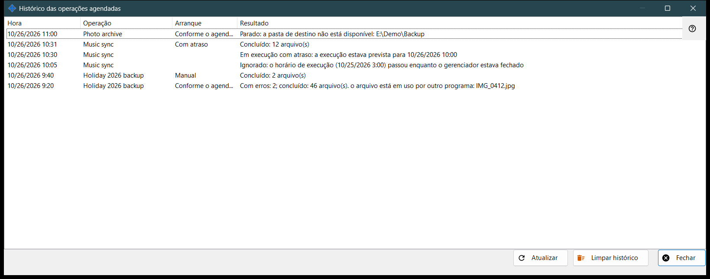
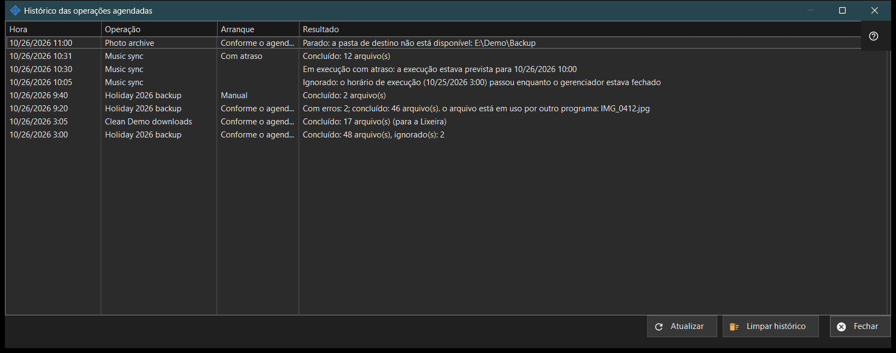

Histórico das operações agendadas
Finalidade
Mostra as execuções e as notas recentes das operações de arquivo agendadas, conforme registradas no diário. As operações de arquivo agendadas são instaladas junto com o Share Manager - um único pacote, sem download separado e sem serviço do Windows - e são executadas enquanto o Share Manager estiver em execução na sua sessão iniciada; elas não precisam de compartilhamento de pastas, servidor, porta aberta nem direitos de administrador. Ela se abre a partir de «Histórico..» na janela «Operações agendadas» e na página «Operações de arquivo agendadas» das configurações do Share Manager.


Nesta ordem
- Leia a lista: Hora, Operação, Inicialização e Resultado.
- Amplie a janela se um resultado for longo.
- Clique em «Atualizar» para reler o diário.
- Clique em «Limpar histórico» e confirme para esvaziá-lo.
- Clique em «Fechar».
Os elementos
Colunas
Hora, Operação (o seu nome), Inicialização e Resultado. Inicialização é Conforme o agendamento, Manual, Executar tudo ou Com atraso, e fica vazio em uma nota. A janela lê as últimas 200 entradas do diário ao abrir e em «Atualizar»; não se atualiza sozinha.
Resultados de uma execução
«Concluído: N arquivo(s)», com «, ignorado(s): M» quando alguns ficaram de fora e «(para a Lixeira)» nas exclusões. «Com erros: N; concluído: M arquivo(s)» seguido da primeira causa, como um arquivo em uso, sem acesso, um arquivo não encontrado ou alterado, ou um disco cheio. «Parado: ..» quando um obstáculo termina uma execução, por exemplo uma pasta inacessível, um recurso sem senha salva ou com a chave do servidor não confirmada, ou um dispositivo offline. «Não iniciado: ..» quando a configuração é recusada, além de «Ignorado: ..» e «Interrompido». O diário guarda códigos, não o texto bruto dos erros, por isso a redação segue o idioma atual. Quando um lado é o Google Drive, a causa também pode ser a falta de conexão com o Google Drive, a falta de espaço nele, a saída da conta ou um arquivo acima do limite do pacote.
Notas
Uma linha sem Inicialização é uma nota: «Ignorado: o horário de execução (..) passou enquanto o gerenciador estava fechado», «Em execução com atraso: a execução estava prevista para ..», «Recusado: esta operação já está em execução ou aguardando a vez» e «Retomada: a causa da parada foi eliminada».
Limpar histórico
Pergunta «Limpar o histórico das operações agendadas? As próprias operações e seus agendamentos não serão alterados.» com Não como resposta padrão. Esvazia apenas este diário; as operações e os seus agendamentos permanecem. O botão fica desativado enquanto o histórico estiver vazio.
Configurações do gerenciador · Configurações de compartilhamento SFTP · Configurações do servidor de troca